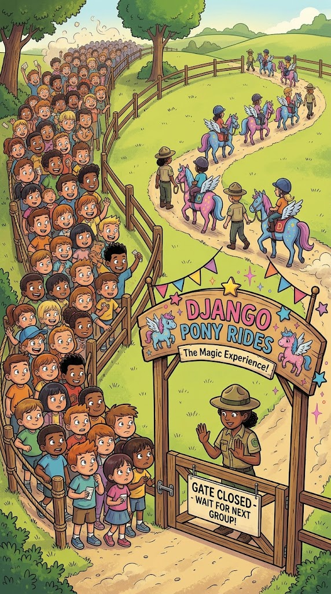

Django Meetup · 20 October 2026
Microservices with Django
1 pony
a herd
Benedikt Bauer · Beyonder
About me
IT Architect & Full-Stack Developer
2008
building software since
2024
IT Architect at Beyonder
Beyonder DE, formerly Ambient Innovation
Before we start
Everything I’ll show comes from small-scale and IoT projects, not from huge business operations.
So take everything tonight with a grain of hay.
Today
01
Microservices 101
What the herd looks like, how it talks, and what it costs
02
Lessons from the field
A real IoT system: what worked and what hurt
03
Live demo
Pony Express: a herd of Django services delivering mail
04
Pony or herd?
When to split, and when to stay a monolith
01
And why would a Django developer care?
Where we start
my_project · one process · one deploy
Where we’re going
order.placedThe definition
“…an approach to developing a single application as a suite of small services, each running in its own process and communicating with lightweight mechanisms, often an HTTP resource API.”
James Lewis & Martin Fowler, “Microservices” (2014)
In practice
One business capability
Orders, payments, sensor data: one job per service.
Owns its data
No shared database. Others ask through an API.
Deploys independently
Ship orders without redeploying payments.
Lightweight protocols
HTTP/REST, gRPC, or events through a broker.
Picks its own tools
Django here, FastAPI there, C on the device.
Designed for failure
The network will fail. Plan for timeouts, retries and fallbacks.
Communication
request / response
GET /accounts/42
200 OK
REST · gRPC · GraphQL
events through a broker
order.placedRabbitMQ · Redis · Kafka · MQTT · Azure Service Bus
The bill
So far
Martin Fowler calls this “MonolithFirst” (2015). Next: what a herd looks like in a real IoT project.
02
A real IoT customer project, from sensor to dashboard and back
The setup
Out in the field, often kilometres from the nearest office
mobile network · not always online
kilometres of distance
Azure, about a dozen services, built with .NET
Sensors
Measurements, values and heartbeats: small and frequent
Cameras
Images: big files that arrive in bursts
Actuators
Commands from operators travel back to the device
The big picture
Reverse path: operator input becomes a command for the device
IoT device
sensors
cameras
actuators
Sensor data
MQTT → IoT Hub → Service Bus
Images
FTP → Blob storage → Event Grid
Normalise & store
Stream Analytics, time series
AI image analysis
Object detection on Azure ML
ControlCenter
Dashboard, live data, image review
Alerts
Incidents and email, a separate track
Device
Ingestion
Processing
Output
Ingestion
small messages, all the time
Every service subscribes to the topics it needs: time series, alerts, device controller, health checks.
big files, in bursts
Images never go through IoT Hub. The upload itself is the event that starts the pipeline.
Pick the transport per kind of data, then meet on the same message bus.
Processing with AI
01
Uploaded
Blob event, routed by Event Grid
02
Move
Check device and location, copy to the image store
03
Analyse
YOLO models on Azure ML: is there an object, and which class?
04
Verify
Auto-verify above a confidence threshold, sample the rest
05
Publish
Results to analytics and the dashboard
Glued together by messages
Each step is an Azure Function with a Service Bus topic in between, so each step scales and fails on its own.
Humans in the loop
Operators verify or correct results in the ControlCenter. Their decisions go back into the pipeline as messages.
Output
the dashboard
a separate track
Alerts listen to the bus, not to the dashboard. If the ControlCenter is down, the emails still go out.
The reverse path
Command
Confirmation
Fire and forget
No acknowledgement. The next telemetry message is the confirmation.
Audit log
Every command is written down: who sent what, and when.
Local control wins
Commands are blocked while a local controller is in charge.
Conclusions

Fault tolerant
Receiver down? Messages wait on the bus. Sender down? Receivers just idle.
Easy fan-out
A new receiver only subscribes to a topic. Nobody else has to change.
Logging for free
A logging service can simply subscribe to every topic.
Parallel by design
Every message stands alone, so add more AI workers. Hundreds of devices already send in parallel.
Bursts and outages?
The queue just grows. Fix: parallel consumers, or separate input and output queues.
The bus itself down?
No local cache, so the data is lost. A deliberate choice on cost and complexity.
Downsides
43
git repositories
2×
as many Azure services
for the one system from the last section
Hard to find your way
Who sends this message, and who reads it? If you don’t know where to look, you’re lost.
Debugging needs a bus
Services push and pull on their own, with no endpoint to call. To trigger anything, you run a message queue.
SPAs need a translator
The frontend speaks REST, the services speak messages. A Backend-for-Frontend sits in between.
No skipping the queue
Nothing happens instantly. Every message waits its turn.
Downsides
What we expect
What happens with one retry
the retry arrives after the parcel has already left
If services rely on message order, they are tightly coupled, and you can’t just add retries. Keep those steps in one service, or make the dependency explicit: shipping waits for both payment.charged and stock.reserved.
03
Mail delivery by magical pony
Live demo
01
Letters pile up at the post office and go into the mailbag, a queue.
02
Magical ponies take one letter at a time to the village.
03
Some ponies get lost (10 %), some stop for a long snack (15 %).
04
No receipt within 8 seconds? Print the letter again.
05
Duplicates are fine. Every letter arrives eventually.
Why not a shop?
Letters don’t depend on each other. No order, no transactions, so retries are safe.
Live demo
RabbitMQ
one topic exchange, three queues
mailbag
letter.posted
postoffice.receipts
picked_up · delivered · pony.*
logbook
# (every message)
Post office
Django · own SQLite
Postmaster
same Django project, reprints overdue letters
Ponies ×N
plain Python, scale with --scale
HTTP
Village
Django · own SQLite
Logbook
plain Python, reads #
Live demo
for method, _, body in channel.consume(MAILBAG):
letter = decode(body)
# The letter is ours now.
channel.basic_ack(method.delivery_tag)
publish(channel, PICKED_UP, receipt(letter))
if deliver(pony, letter):
publish(channel, DELIVERED, receipt(letter))
publish(channel, PONY_READY, {"pony": pony})
def reprint_overdue(self):
overdue = Letter.objects.filter(
status=Letter.Status.PICKED_UP,
deadline__lt=timezone.now(),
)
for letter in overdue:
letter.attempt += 1
letter.status = Letter.Status.QUEUED
letter.save()
publish(self.channel, POSTED,
letter.as_message())
At-least-once delivery: acknowledge early, reprint late, accept duplicates.
Live demo
Commands run with docker compose …
01
Happy path
Post 10 letters
Some get reprinted, some arrive twice. Fine.
02
A burst
up -d --scale pony=10
The mailbag grows, a bigger herd drains it.
03
The village is closed
stop village
Ponies find nobody home. Nothing is lost.
04
No ponies at all
stop pony
Letters wait in the mailbag until the herd is back.
05
Postmaster on a break
stop postmaster
Receipts pile up, then it catches up.
06
Logging for free
logs -f logbook
Every message, without touching a service.
04
When one buffed-up pony beats a herd of little ones
Conclusion
a well-structured monolith
microservices on a bus
Start with a buffed-up pony. Grow a herd only for the parts that need to scale, fail or ship on their own.
* When order does matter, a saga coordinates the steps and undoes failed ones with compensating actions, like a refund.
Thank you!
Benedikt Bauer · bbauer.eu · Beyonder